Fab Academy Tutorials & References
Assignment
Design a 3D mold, machine it, and use it to cast parts
Oval Shape Paper Weight
In this week I was trying to make mold in which any access left material can be used to cast a Paper Weight and left over material get used.
Paper Weight is Oval Shaped Design which can be used for playing with by spinning it on table.
Process
CAD Design
Creating a 3D .stl File to Mill using Roland MX 20
- By using Rhino we can create a 3D model of Oval shape
- I have designed according to wall required for molding casting
- Creating 2 rectangle of desired wall thickness by Rectangle and Offset commands
- Then create Elipisoid and trimming it we can get desired design
- export that file to .stl format.

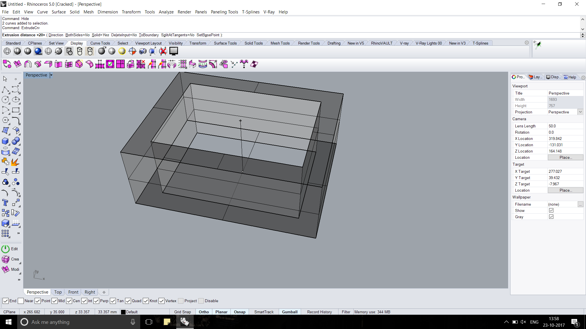
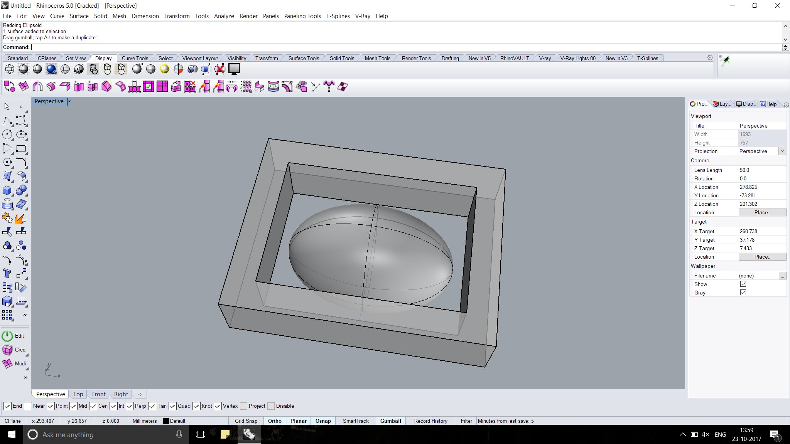
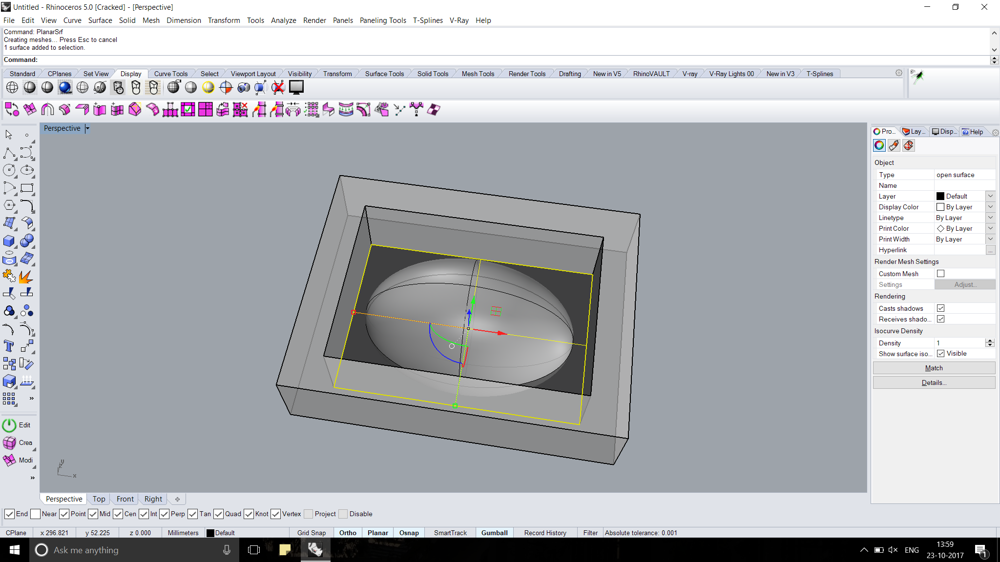
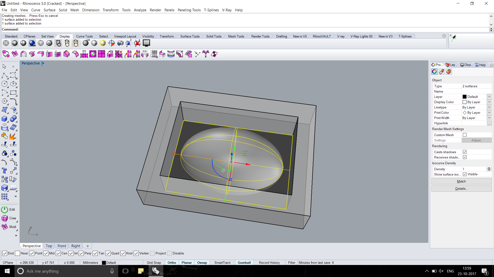
Milling by MOdela MX 20
I have used 90 mm X 70 mm X 40 mm Wax Block for Milling
- Using Double side tape I placed Block on Milling bed, So it get fixed and don't move while milling process
- In Ubuntu > Open Terminal > enter command sudo fab >password fab a window will open
- select mesh .stl as input and Modella MX 20 as out put
- New window will have option of loading .stl file after loading click on make .PNG
- select tool Inches 1/8 Rough for rough cut going to use finish cut in next process
- Click on make path it will show a tool path generated
- then set X axis - Y axis ( Note this you need same cordinated to start in next Finish cut )
- Make RML
- Send and Start Milling.
- Observe Path if you find something wrong stop machine.
- After process you need to change tool to finish cut
- Again process will happen with ball nose milling bit to have finishing surface.
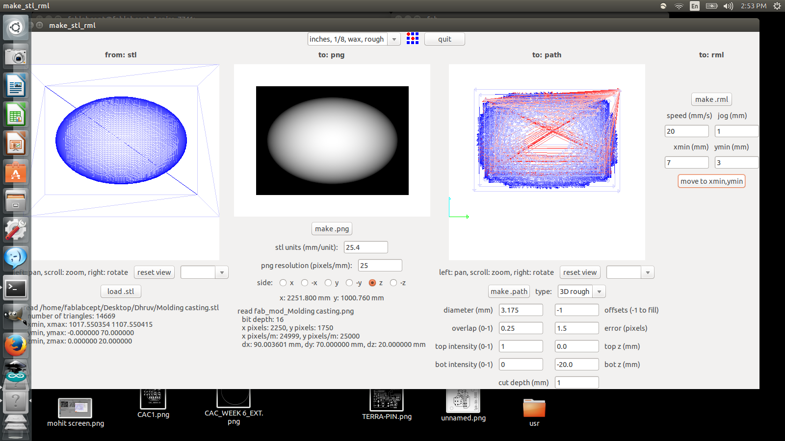
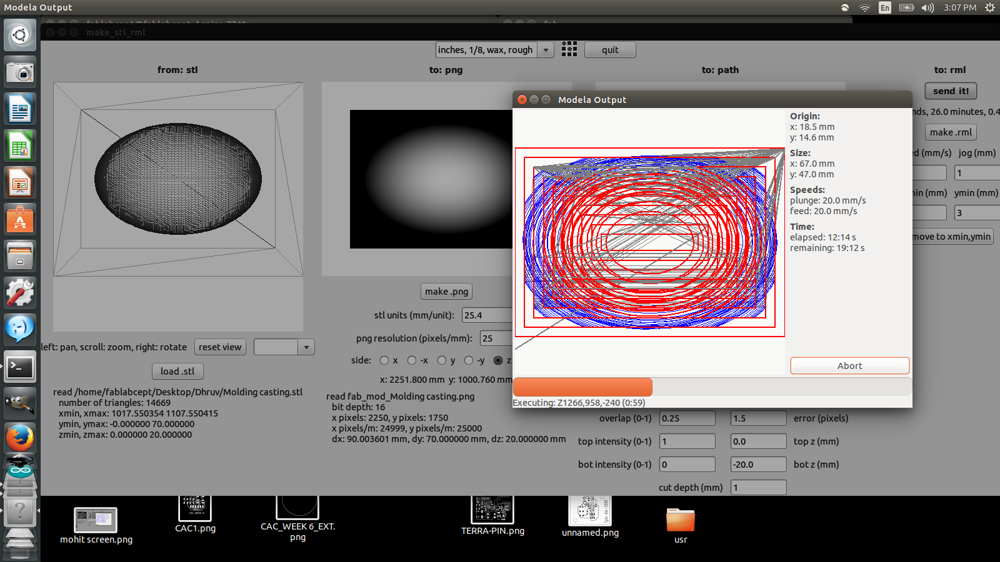
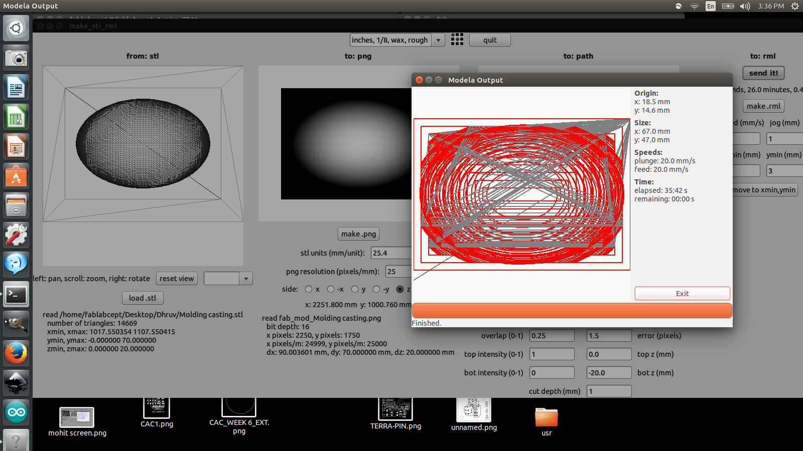
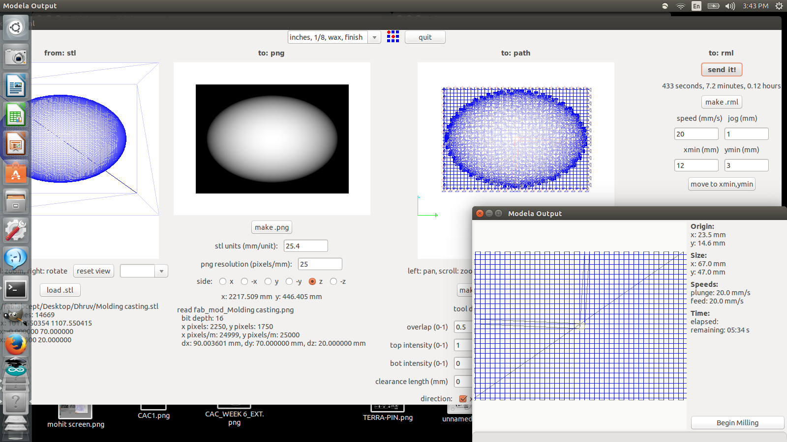
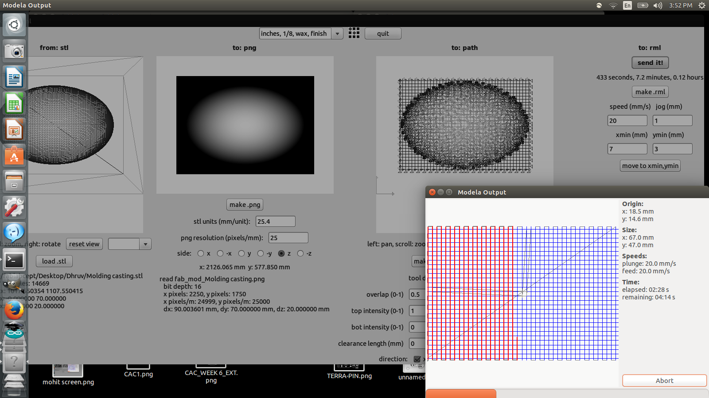
Preparing Mold for casting
- Check for proper level
- I have added 4 mm of cover to raise level
- By using paper-tape and CANDY STICK
- You can use sand or any filling material for measuring exact volume to be filled
Rubber
- Two Solution provided PART A & PART B
- For Rubber we need to take EQUAL proportion
- By using 2 plastic glass and then in 1 glass we can mix it.
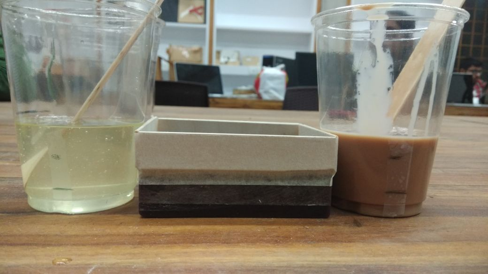 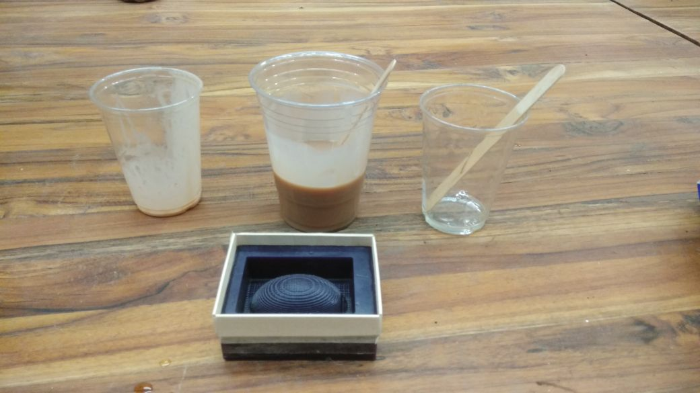
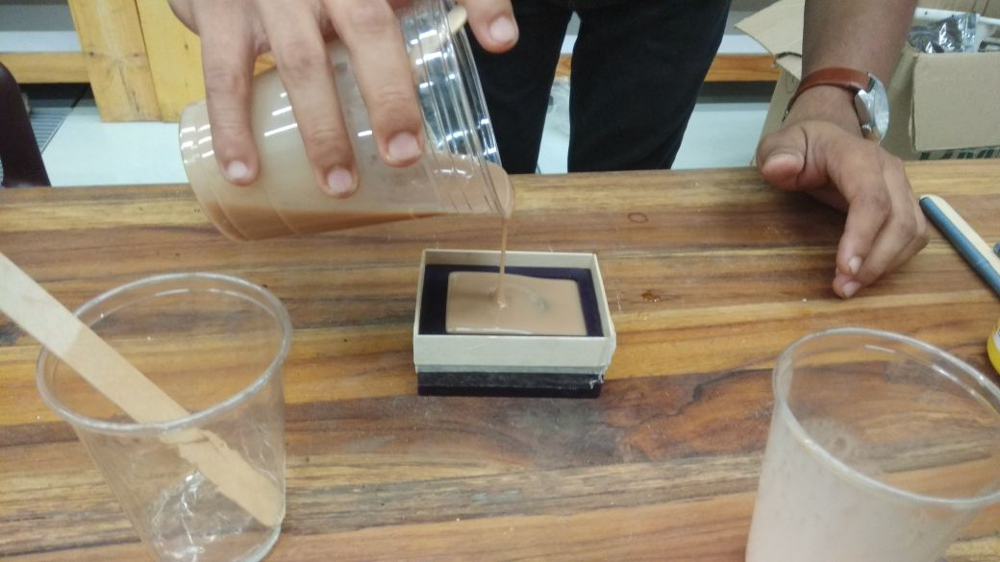 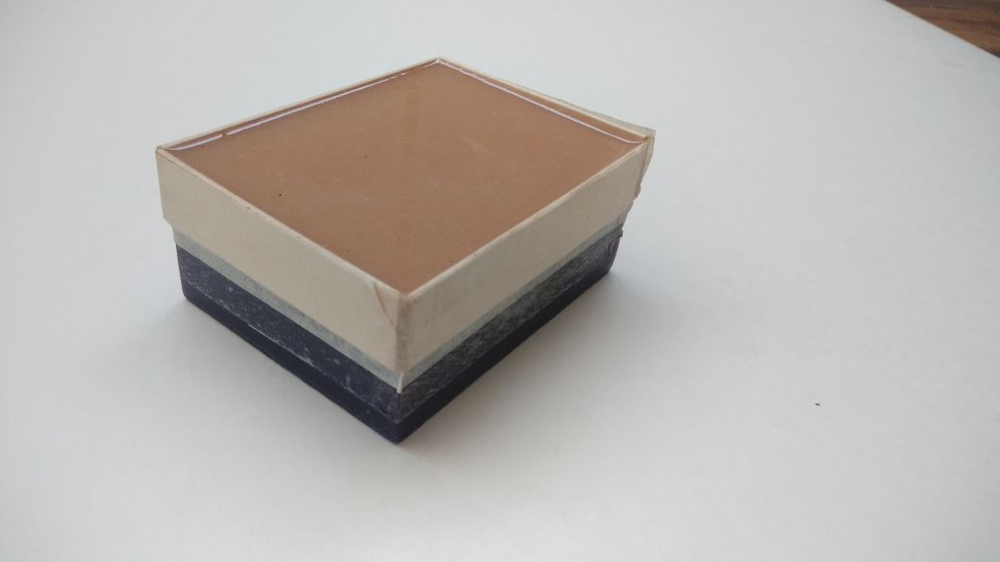

Now using Plastic we will cast Positive Final Output.
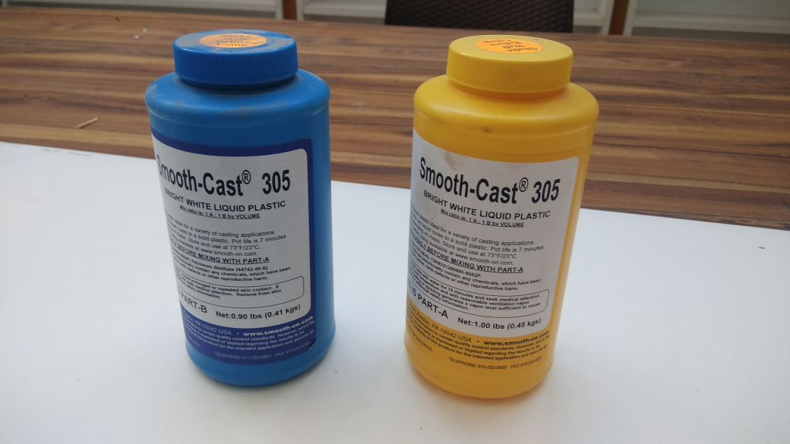 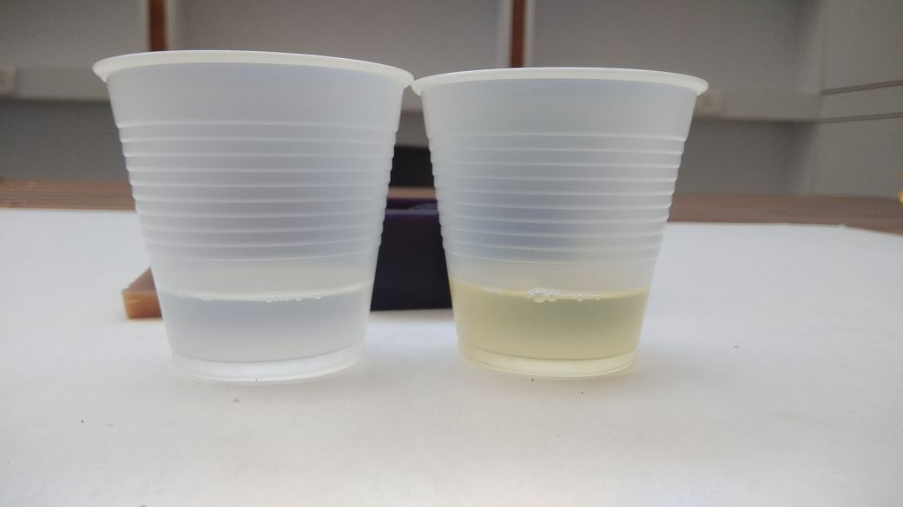
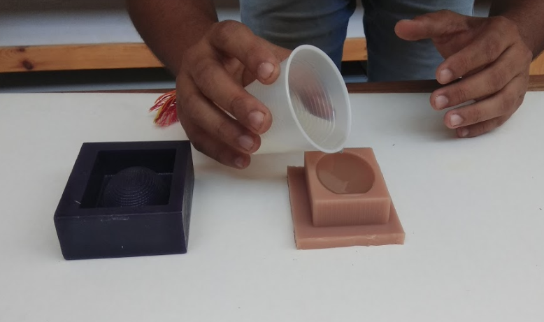 It will take 30 mins to for Setting time and you can cast next after that.
Output
Wax Mold, Negative Rubber Mold, And Positive Casted Plastic
Some Quick Points
- I made a mistake by creating same surface level of Oval and wall So I needed to have little more height of walls.
- Later after Casting I found 30% of Molding Rubber getting waste ( We can use sand for measuring exact volume and then divide according to it)
- Check proposition is in Volume or weight because density of both Part A and Part B is different
- I faced error while loading stl file Right process is Load stl > click Make PNG > Select tool.
- Wrong Process : Load stl > Select Tool > Make PNG ( Laptop will Hang in my case )